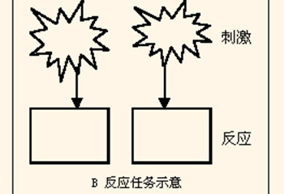

辨别反应时测试
12333 人测试过
2012-06-14 发布

开始测试
本测试可用于鉴定用户的辨别反应时，属专业心理测试中的能力测试。
辨别反应时又被称之为C反应时，是指当呈现两个或两个以上的刺激时，要求测试者对某一特定的刺激作出反应，对其它刺激不做反应，测试者在刺激呈现到做出辨别反应的这段时间，就是被试的辨别反应时。例如呈现两种或两种以上色光，要求被试只对红光做出按键反应。
想知道你的辨别反应是否灵敏，通过本测试，可以准确无误的测试出你的辨别反应速度。
猜你喜欢：